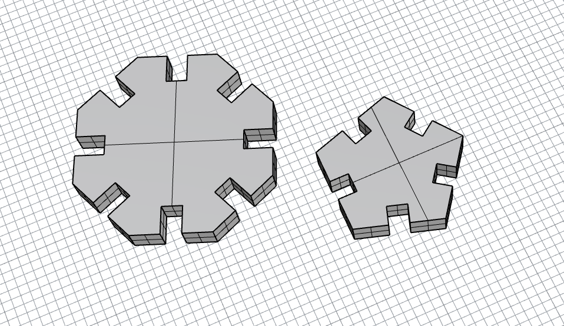

A3: Getting Started With 3D Printing!
Oct. 25, 2022
Here's my finished and assembled Parametric Laser Cut Construction:

Design & Implementation
As my first laser cutting assginment dealt with polygons, I decided to continue the trend for my second assignment. For this assignment, I decided to create an octogon (11mm in radius) and hexagon (8mm in radius). Using the polygon component in Grasshopper, I was able to easily change the number of sides of the shape by adjusting the segment.
For the width of the gaps, I used a caliper to measure the width of the cardboard. The caliper measured the cardboard to be 2.52mm. I set my measurement to be a bit thinner (2.163mm) since the laser cutter tends to remove a bit more cardboard.

After experimenting with the different sizes, I was satisfied with the two shapes. I wanted the octogon to be a bit bigger than the hexagon. Ideally, the hexagon would connect the octogon pieces together.
These are the measurements of the shapes that I ended up with when modeling in Grasshopper.


Laser Cutting
I went back to the 8 since that machine tends to break down less than the one at the MILL. I had issues with exporting the Rhino file to Adobe Illustrator and opening up the Illustor file on the computer to laser cut. A work around was to export the Rhino rile as a .dxf file and then importing it into Adobe Illustrator. That worked well, but I had issues with keeping the same size when importing. These are some of the test pieces that I had printed. The shapes were way too big during my first print. I kept sizing the shapes down until the gaps were able to link with each other. Third try was a charm!


Once I got the right size, I printed the shapes out. It's always so satisfying to watch the laser cutter do its job!

Here's the final product after assembling all the pieces together. Not sure what I was going for, so I guess it's up to everyone's interpretation.
It's giving...abstract art.
Laser cutter settings:
- Speed: 100
- Power: 80
- PPI: 300
Here's a screenshot of the Grasshopper file:

Acknowledgement
Junchao for the tutorial on grasshopper – it was very much needed to thoroughly understand everything!
Source Files
Rhino fileGrasshopper file
Adobe file
Return to Main